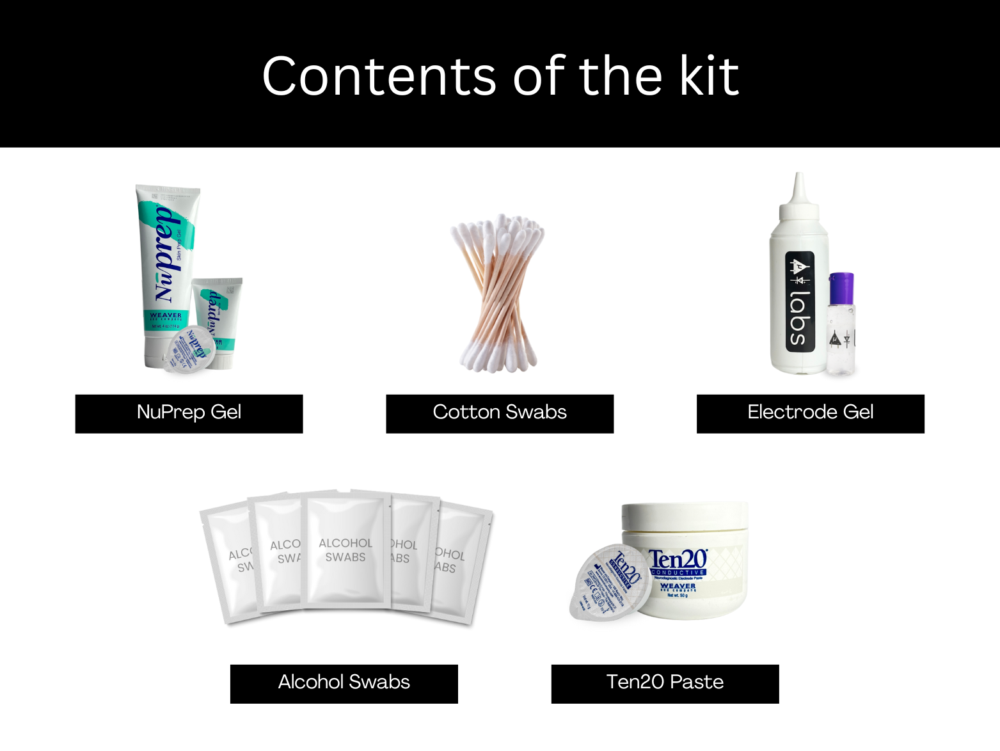

Panduan Persiapan Kulit#
Mengapa persiapan kulit penting?#
Persiapan kulit yang tepat sangat penting sebelum merekam sinyal biopoten sial apa pun, baik itu Elektrokardiografi (ECG), Elektromiografi (EMG), Elektroensefalografi (EEG), atau Elektrookulografi (EOG).
Permukaan kulit bersih:Menghilangkan sel kulit mati, minyak, & zat lain yang meningkatkan impedansi kulit.Memperbaiki impedansi:Memperbaiki konduksi sinyal listrik dari tubuh ke peralatan perekaman dan meminimalkan impedansi.Kontak elektroda-kulit:Memastikan kontak optimal antara elektroda dan permukaan kulit.Kualitas sinyal:Meningkatkan kualitas keseluruhan sinyal yang direkam, memberikan data yang jelas & dapat diandalkan untuk analisis & meningkatkan kemampuan untuk menangkap variasi halus dalam sinyal biopoten sial.Konsistensi dalam rekaman:Mengurangi variabilitas dalam kualitas sinyal, membuatnya lebih mudah untuk membuat proyek Human-Computer Interface (HCI), Brain-Computer Interface (BCI) atau aplikasi dunia nyata.Adhesi jangka panjang:Memfasilitasi adhesi jangka panjang & penempatan stabil elektroda pada kulit selama pemantauan sinyal yang diperpanjang.
Kit Contents#

Langkah-langkah yang harus diikuti#
Anda dapat mengikuti langkah-langkah yang diberikan di bawah untuk melakukan persiapan kulit dengan benar:
Step 1: Identifikasi area target#
Identifikasi area target di mana elektroda gel atau BioAmp Bands akan ditempatkan untuk merekam sinyal biopoten sial.

Area target untuk merekam EOG#

Area target untuk merekam EMG#

Area target untuk merekam ECG#

Area target untuk merekam EEG#
Step 2: Aplikasikan gel NuPrep#
Ambil sedikit gel NuPrep menggunakan cotton swab dan aplikasikan pada area target Anda.

Step 3: Bersihkan permukaan kulit#
Gunakan gerakan melingkar lembut untuk menggosok gel pada permukaan kulit. Ini menghilangkan semua sel kulit mati & meningkatkan konduktivitas.

Gosok gel dengan lembut menggunakan cotton swab#
Warning
Jangan menggosok gel terlalu lama karena memiliki sifat abrasif dan dapat menyebabkan kemerahan kulit dan iritasi.
Step 4: Lap gel berlebih#
Lap gel berlebih dengan alcohol swabs atau wet wipes.

Lap gel berlebih#
Warning
Menggunakan alcohol swabs dapat mengeringkan kulit, jadi jangan gunakan jika kulit Anda sudah kering.
Tutup mata Anda saat menggunakan alcohol swabs untuk perekaman EOG jika tidak dapat menyebabkan kemerahan mata & iritasi.
Step 5: Mengukur sinyal#
Sekarang Anda dapat menggunakan elektroda gel atau BioAmp bands untuk perekaman sinyal.
Menggunakan elektroda gel#
Hubungkan kabel BioAmp ke elektroda gel, kupas backing plastik dari elektroda dan tempatkan kabel IN+, IN-, REF sesuai dengan perekaman biopoten sial spesifik Anda.

Menempatkan elektroda gel pada permukaan kulit#
Note
Saat menempatkan elektroda gel pada kulit, pastikan untuk menempatkan tab non-sticky elektroda ke arah berlawanan dengan pertumbuhan rambut Anda. Ini memungkinkan Anda untuk menghilangkan elektroda dengan mudah tanpa menarik banyak rambut tubuh.
Menggunakan BioAmp bands#
Hubungkan kabel BioAmp ke BioAmp band Anda. Sekarang aplikasikan sedikit electrode gel atau Ten20 conductive paste pada elektroda kering antara kulit dan bagian metalik kabel BioAmp. Ini meningkatkan konduktivitas sinyal, meningkatkan kualitas sinyal keseluruhan.

Metode 1: Menggunakan Electrode gel#

Metode 2: Menggunakan Ten20 paste#
Note
Grafik di atas mendemonstrasikan penggunaan electrode gel/Ten20 paste dengan Muscle BioAmp Band. Demikian pula Anda dapat menggunakan Brain BioAmp Band dan Heart BioAmp Band. Rujuk ke panduan Menggunakan BioAmp Bands untuk merakit dan menggunakan semua BioAmp Bands dengan benar.
Sekarang Anda siap! Buat semua koneksi dengan benar dan mulai merekam sinyal biopoten sial Anda.
Warning
NuPrep gel, Ten20 paste dan alcohol swabs tidak boleh digunakan jika Anda memiliki riwayat alergi kulit terhadap lotion dan kosmetik.